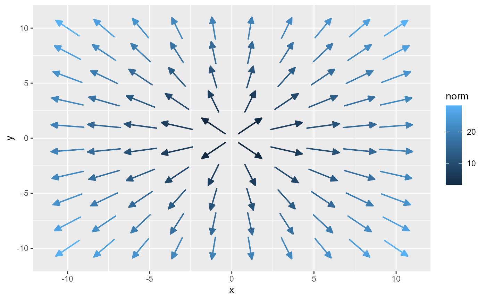

These functions provide convenient ggplot2 layers for drawing gradient fields
by computing the gradient of a scalar field. A user-defined function (fun)
specifies the behavior of the scalar field by taking a numeric vector of
length 2 (representing \((x, y)\)) and returning a single numeric value.
The underlying StatStreamField computes the gradient via numerical
differentiation (using numDeriv::grad()) and GeomStream renders the
resulting vectors.
Usage
geom_gradient_field(
mapping = NULL,
data = NULL,
stat = StatStreamField,
position = "identity",
...,
na.rm = FALSE,
show.legend = TRUE,
inherit.aes = TRUE,
fun,
xlim = NULL,
ylim = NULL,
n = 11,
max_it = 1000,
T = NULL,
L = NULL,
center = TRUE,
type = "vector",
normalize = TRUE,
tail_point = FALSE,
eval_point = FALSE,
grid = NULL,
lineend = "butt",
linejoin = "round",
linemitre = 10,
arrow = grid::arrow(angle = 30, length = grid::unit(0.02, "npc"), type = "closed")
)
stat_gradient_field(
mapping = NULL,
data = NULL,
geom = GeomStream,
position = "identity",
...,
na.rm = FALSE,
show.legend = TRUE,
inherit.aes = TRUE,
fun,
xlim = NULL,
ylim = NULL,
n = 11,
max_it = 1000,
T = NULL,
L = NULL,
center = TRUE,
type = "vector",
normalize = TRUE,
tail_point = FALSE,
eval_point = FALSE,
grid = NULL,
lineend = "butt",
linejoin = "round",
linemitre = 10,
arrow = grid::arrow(angle = 30, length = grid::unit(0.02, "npc"), type = "closed")
)
geom_gradient_field2(
mapping = NULL,
data = NULL,
stat = StatStreamField,
position = "identity",
...,
na.rm = FALSE,
show.legend = TRUE,
inherit.aes = TRUE,
fun,
xlim = NULL,
ylim = NULL,
n = 11,
max_it = 1000,
T = NULL,
L = NULL,
center = FALSE,
type = "stream",
normalize = TRUE,
tail_point = TRUE,
eval_point = FALSE,
grid = NULL,
lineend = "butt",
linejoin = "round",
linemitre = 10,
arrow = NULL
)
stat_gradient_field2(
mapping = NULL,
data = NULL,
geom = GeomStream,
position = "identity",
...,
na.rm = FALSE,
show.legend = TRUE,
inherit.aes = TRUE,
fun,
xlim = NULL,
ylim = NULL,
n = 11,
max_it = 1000,
T = NULL,
L = NULL,
center = FALSE,
type = "stream",
normalize = TRUE,
tail_point = TRUE,
eval_point = FALSE,
grid = NULL,
lineend = "butt",
linejoin = "round",
linemitre = 10,
arrow = NULL
)Arguments
- mapping
A set of aesthetic mappings created by
ggplot2::aes(). Additional aesthetics such ascolor,size,linetype, andalphacan be defined. In geom_gradient_field the default mapping includescolor = after_stat(norm), whereas in geom_gradient_field2 the default mapping includeslength = after_stat(norm).- data
A data frame containing the input data.
- stat
The statistical transformation to use on the data for this layer. Defaults to StatStreamField.
- position
Position adjustment, either as a string or the result of a position adjustment function.
- ...
Other arguments passed on to
grid::layer().- na.rm
Logical. If
FALSE(the default), missing values are removed with a warning.- show.legend
Logical. Should this layer be included in the legends?
- inherit.aes
Logical. If
FALSE, overrides the default aesthetics rather than combining with them.- fun
A function that defines the scalar field. It should take a numeric vector of length 2 (representing \((x, y)\)) and return a single numeric value. (Required)
- xlim
Numeric vector of length two. Specifies the limits of the x-axis domain. Defaults to
c(-1, 1).- ylim
Numeric vector of length two. Specifies the limits of the y-axis domain. Defaults to
c(-1, 1).- n
Integer. Grid resolution specifying the number of seed points along each axis. Higher values produce a denser gradient field. Defaults to
11.- max_it
Integer. Maximum number of integration steps allowed when computing the gradient stream. Defaults to
1000.- T
Numeric. Time increment used for numerical integration when
normalizeis FALSE. If not provided, it is computed automatically based on grid spacing and the vector field’s magnitude.- L
Numeric. Target length for the gradient vectors or streamlines. When
normalizeis TRUE, computed vectors are scaled to have length L. If not provided, L is computed automatically from the grid spacing.- center
Logical. If
TRUE, centers the seed points so that the original (x, y) becomes the midpoint.- type
Character. Specifies the type of field to compute: use
"stream"to generate integrated streamlines or"vector"for individual vector segments. Defaults to"stream".- normalize
Logical. If
TRUE, gradient vectors are normalized based on grid spacing. Defaults toTRUE.- tail_point
Logical. If
TRUE, a point is drawn at the tail of each gradient vector.- eval_point
Logical. If
TRUE, a point is drawn at the evaluation point where the gradient was computed. Defaults toFALSE.- grid
A data frame containing precomputed grid points for seed placement. If
NULL(default), a regular Cartesian grid is generated based onxlim,ylim, andn.- lineend
Line end style (round, butt, square).
- linejoin
Line join style (round, mitre, bevel).
- linemitre
Line mitre limit (number greater than 1).
- arrow
A
grid::arrow()specification to add arrowheads to the gradient vectors. In geom_gradient_field, the default is a closed arrow with a 30° angle and length0.02npc; ingeom_gradient_field2(), the default isNULL.- geom
The geometric object used to render the streamline (only used in
stat_stream(); defaults to GeomStream).
Value
A ggplot2 layer that computes and plots a gradient field by numerically differentiating a scalar field.
Details
Two variants are provided:
geom_gradient_field() uses a default mapping that sets
color = after_stat(norm).geom_gradient_field2() uses a default mapping that sets
length = after_stat(norm)(withcolorunmapped by default).
Aesthetics
geom_gradient_field() and geom_gradient_field2()
understand the following aesthetics (required aesthetics are in bold):
x: The x-coordinate of the seed point.y: The y-coordinate of the seed point.color: In geom_gradient_field, the color of the gradient vector. In geom_gradient_field2, color is not mapped by default.length: In geom_gradient_field2, the computed vector norm.size,linetype,alpha: Additional aesthetics to control appearance.
Computed Variables
The following variables are computed internally by StatStreamField when generating the gradient field from a scalar function:
- norm
The Euclidean norm of the gradient vector, calculated as \(\sqrt{fx^2 + fy^2}\). This value is used, by default, for mapping color or scaling arrow lengths in the visualization.
- avg_spd
This variable may represent an average speed computed from the gradient magnitude. In the default mapping for geom_gradient_field, the color aesthetic is mapped to
after_stat(avg_spd).
Examples
Si <- matrix(c(1, 0.75, 0.75, 1), nrow = 2)
f <- function(u) exp(-as.numeric(u %*% solve(Si) %*% u) / 2) / (2 * pi * det(Si))
ggplot() +
geom_gradient_field(fun = f, xlim = c(-3, 3), ylim = c(-3, 3))

if (FALSE) { # \dontrun{
df <- expand.grid(x = seq(-3, 3, 0.1), y = seq(-3, 3, 0.1)) |>
transform(fxy = apply(cbind(x, y), 1, f))
ggplot() +
geom_raster(aes(x, y, fill = fxy), data = df) +
geom_gradient_field(fun = f, xlim = c(-3, 3), ylim = c(-3, 3)) +
coord_equal()
fxy <- function(x, y) apply(cbind(x,y), 1, f)
ggplot() +
ggdensity::geom_hdr_fun(fun = fxy, xlim = c(-3,3), ylim = c(-3,3)) +
geom_gradient_field(fun = f, xlim = c(-3,3), ylim = c(-3,3)) +
coord_equal()
library("ggdensity")
fxy <- function(x, y) apply(cbind(x, y), 1, f)
fxy(1, 2)
f(1:2)
ggplot() +
geom_hdr_fun(fun = fxy, xlim = c(-3, 3), ylim = c(-3, 3)) +
geom_gradient_field(fun = f, xlim = c(-3, 3), ylim = c(-3, 3)) +
coord_equal()
} # }